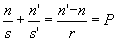
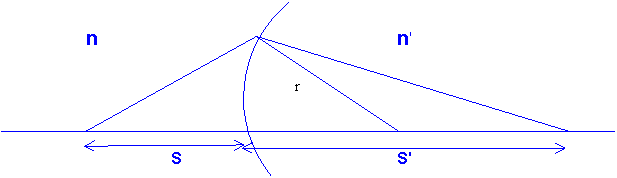
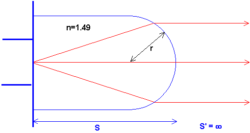

Avbildning i sfärisk yta
Vid avbildning i en sfärisk yta(En lins består av minst två, så det är inte det vi pratar om nu) gäller ett samband mellan objekts- (=s) och bildavstånd (=s') som kallas linsmakarformeln.
(1:1) 
där P kallas ytans styrka och fås i dioptrier (om r mäts i m)

För att denna ska fungera måste vi införa ett sätt att hålla rätt på plus och minus.
Vi låter s och s' vara positiva om de ligger på "rätt" ställe, dvs objektet i
objektsrymden och bilden i bildrymden , medan de är negativa om de hamnar "fel", såsom på förra sidans vattenexempel där bilden hamnade i ORAv konvention väljer vi också att låta krökningsradien på ytan, r, vara positiv om krökningscentrum (det ställe där man stoppar ner nålen i passaren) ligger i bildrymden.
Vill man veta orsaken till sambandet kan man fördjupa sig i det .
Vi andra räknar exemplet med vattenytan:
Tån ligger 1m under ytan, alltså är s=1m.
n=1.33 (Brytningsindex i OR), n'=1.00 (brytningsindex i BR)
Krökningsradien, r, är oändlig eftersom ytan är plan.
Sätter vi in detta (gör det!!) i linsmakarformeln får vi bildavståndet
s'=-0.75m
Minustecknet betyder att bilden hamnar i OR, dvs nere i vattnet (tack o lov), och vi ser att trots att ytan har styrkan noll ligger bilden på annat ställe än objektet. Att styrkan på ytan är noll betyder alltså inte att den är betydelselös .
Nytt exempel (att räkna själv)
En lysdiod består av en lysande punkt inkapslad med en plastknopp så att denna gör ljuset tämligen parallellt när det kommit ut.
Antag att plasten görs i PMMA (n=1.49) och har krökningsradien 2mm.
Hur lång bör då lysdioden vara? Jfr fig.

Svaret bör överensstämma med den dagliga erfarenheten av hur en lysdiod ser ut.
Till nästa sida (Avbildning i tunn lins)
Till nästa kapitel (Begränsningar i optiska system)